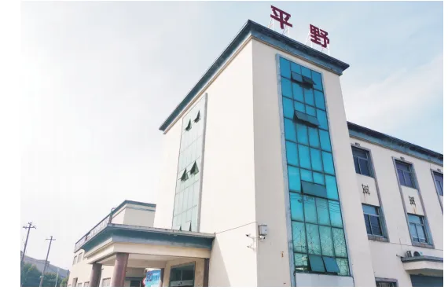
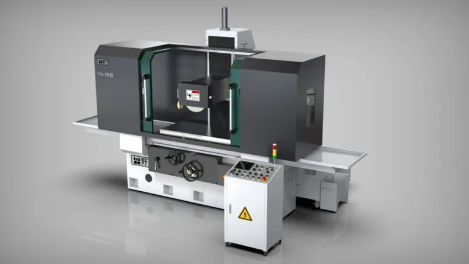
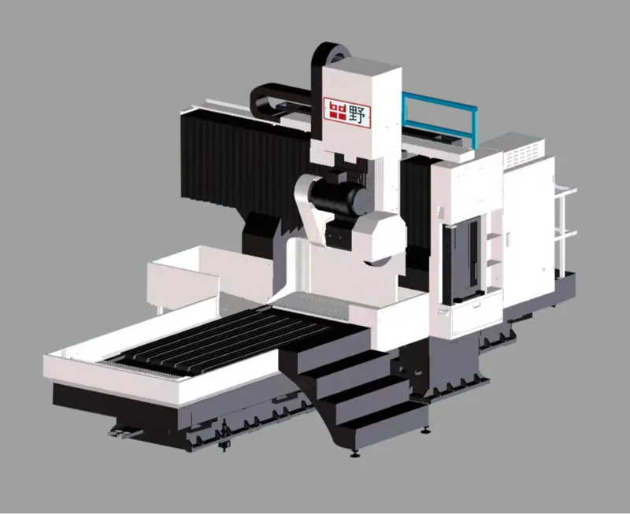
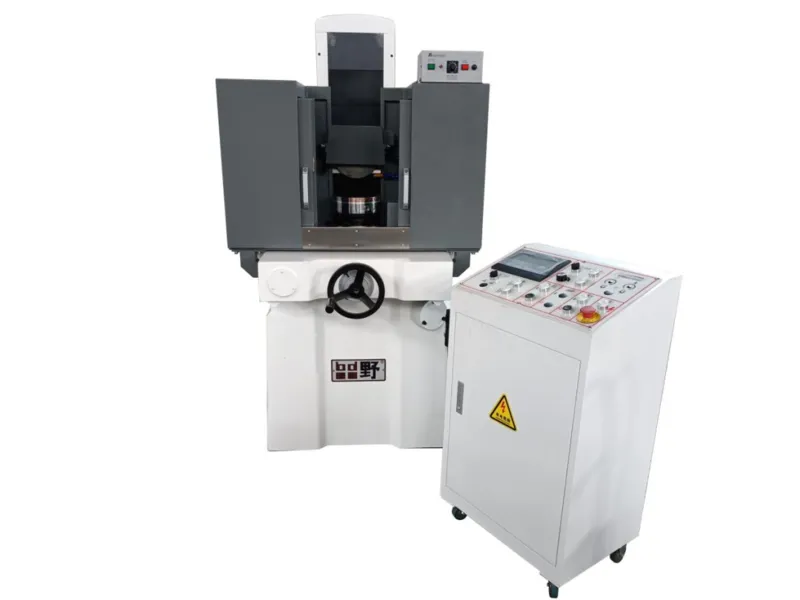

展商推荐 | 杭州平野邀您参观5月郑州工博会
首页 / 展商推荐 | 杭州平野邀您参观5月郑州工博会优质展商推荐
杭州平野精密机械有限公司
展位号：BT029-1
诚邀您参观
2024郑州工业装备博览会
5月7-10日|郑州国际会展中心

企业简介
杭州平野精密机械有限公司成立于2003年。工厂位于“高端磨床之乡”和“中国十强县（区）”杭州市萧山区。平野秉承对产品极致创新追求和持续改善的专业精神，数十年专注精密磨床的研发和制造，志在提高中国制造业过程工艺水准，坚守细节铸就品质，服务承载未来的经营理念，立足为中国乃至全球用户提供卓越产品和技术服务。公司管理和技术团队有着数十年外企和台湾磨床行业的管理和技术从业经验，并着力于精益的生产管理和完善的品控流程。博众所长，在强强联合中充分吸收日方和台方之所长，掌握精密磨床行业之精髓，其设计制造的精密磨床品质一直广受好评。质善品优，敢磨天下不平事！
主要产品
精密平面磨床PSG-5010/5012CMS

市场价：32.5万
中部工业采购节钜惠价：2？.8万
产品优势简介：
三轴自动，上下伺服（日本三菱），前后使用高精密滚珠丝杆（变频控制），7寸触摸屏，磁性分离器，全罩防护，安全及防水效果更好。工作精度：表面粗糙度＜Ra0.15um（具体根据砂轮和工件材质而定）；加工面对基准面的全台面平行度500:0.005mm。
龙门导轨磨床PSG-1220GM

市场价：102万
中部工业采购节钜惠价：？8万
产品优势简介：
1、升降传动采用精密C3级滚珠螺杆配合齿轮组作精确定位进给，可加装高解析度光学尺（特别附件）做闭回路设计，配合CNC控制系统，作平面研磨。
2、卧式主轴采用动静压主轴，标准砂轮尺寸为510*80*203mm，搭建20HP强力主轴马达，是优化强而友力之研磨头设计。
3、独立式“方形组”之设计概念，门型与工作台分离式设计，底座不会因门型重量的压力影响到工作台面精度。
4、采用门式方形组的锁紧体，结构刚性强。
精密圆台磨床PSG-200CMS-R

市场价：17.5万
中部工业采购节钜惠价：1？.5万
产品优势简介：
三轴自动，Z轴伺服进刀，最小进刀量0.001mm，精度：≤0.002mm,外挂式电子手轮，平野机械转台，全罩防护。
·END·